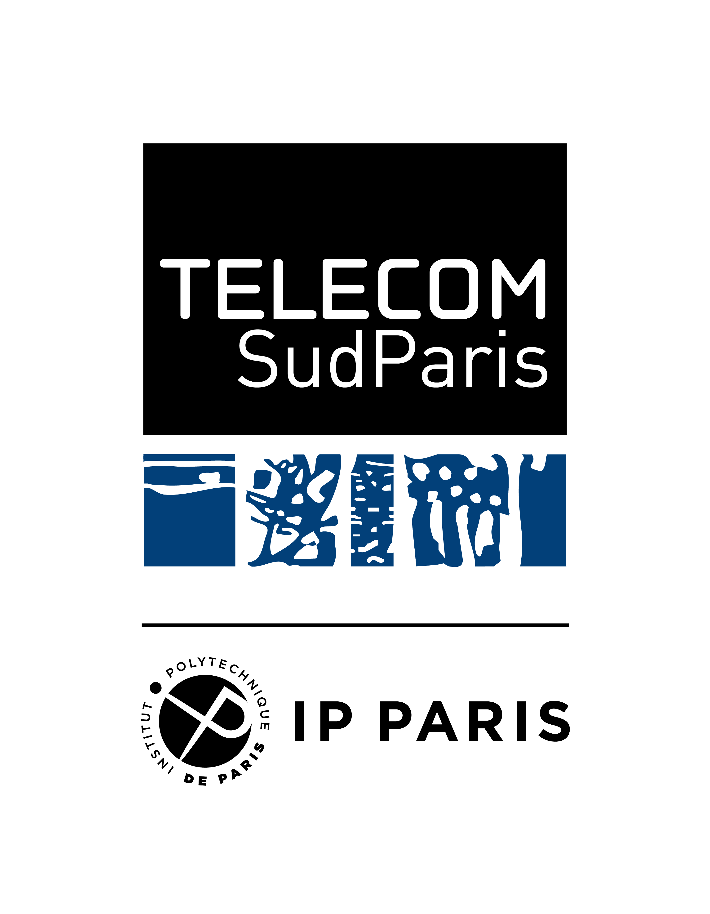

Portfolio
Héloïse
Havy.
Étudiante ingénieure en informatique
Je construis mon parcours entre sciences, projets concrets et engagement. Ici, je rassemble ce que j'apprends, ce que je crée et les personnes avec qui je le fais.Texte à personnaliser
Parcours, projets et engagements France
01 — PORTRAIT

FORMATIONTélécom SudParis
À propos de ce portfolio
Un parcours en mouvement, raconté par ses étapes.